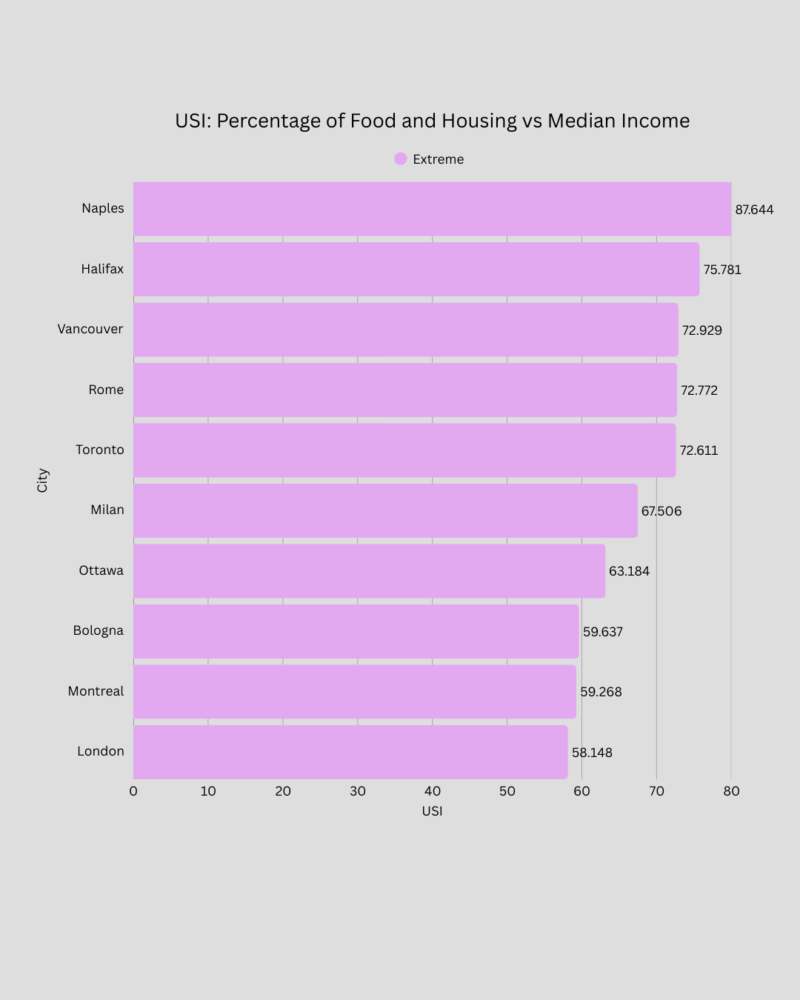
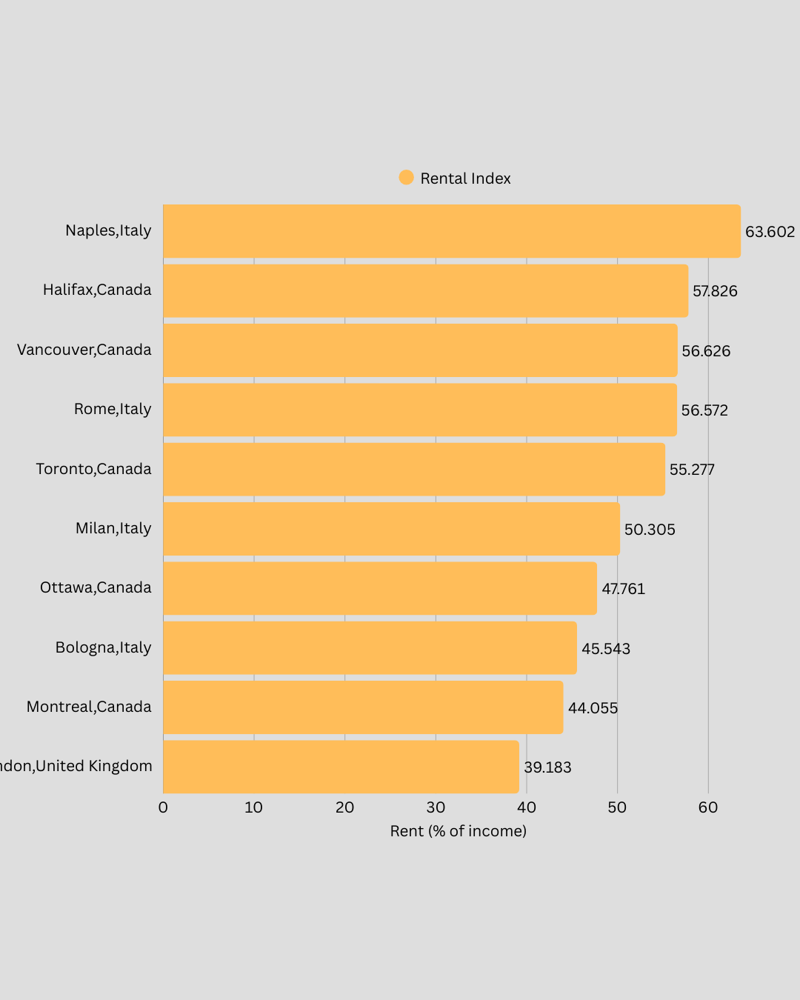
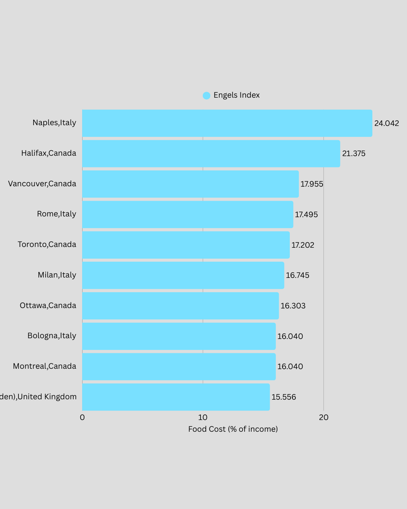
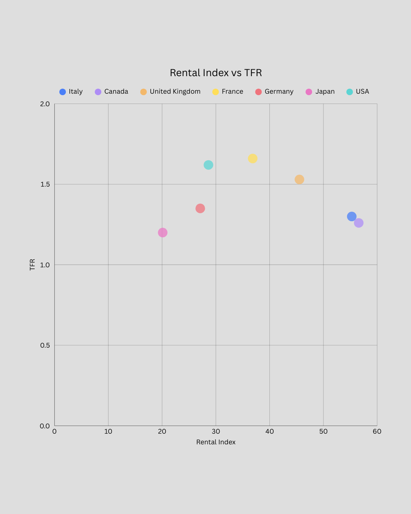

Urban Stress Across the G7: Housing Pressure in Major Cities
High-income countries do not automatically produce affordable cities. Across the G7, many major metropolitan areas now show elevated Urban Stress Index (USI) scores. The defining pressure is no longer food. It is housing.
In modern advanced economies, living itself — especially securing independent housing in economically relevant cities — consumes a growing share of income. Rich countries can still feel unaffordable.
Highest Urban Stress Index (USI) Cities in the G7

The chart above ranks the major G7 cities with the highest overall Urban Stress Index. USI reflects the combined burden of essential food costs and rental housing relative to income.
Several structural patterns emerge. Southern Italian cities such as Naples appear high not because rents are globally extreme, but because rents are heavy relative to local income levels. Urban stress is therefore not simply about price — it is about the mismatch between income and essential costs.
Canada reflects a broader urban system issue. High-ranking Canadian cities suggest that affordability pressure is no longer isolated to one or two markets. Housing costs have expanded faster than income growth across multiple metropolitan areas.
In the UK, London may reflect real estate-driven dynamics, while regional cities show how stagnant wage growth can worsen rental ratios even when rents are not globally extreme.
Why Food Burden No Longer Defines Urban Affordability

Food burden across G7 cities rarely exceeds the mid-teens as a share of income. In the 21st century, modern agri-food systems and trade networks ensure minimum calorie access remains relatively stable in rich countries.
Food costs still matter, especially during inflation cycles. However, they are rarely the dominant driver of urban stress in advanced economies.
Food spending also retains partial flexibility. Households can substitute products, reduce dining out, or adjust consumption patterns. Housing does not offer comparable flexibility.
This is why food rarely pushes cities into severe USI territory on its own. The decisive factor is usually rent.
Rental Burden as the Defining Urban Constraint

Rental burden dominates urban stress rankings across the G7. Housing is the least adjustable major expense in urban life. It is location-dependent, largely fixed in the short term, and foundational to labour market participation.
Most welfare systems and employment structures assume a stable address. Without secure housing, participation in economic life becomes fragile.
For younger workers, this pressure is particularly severe. Large cities are often the only viable option for finance, technology, media, and professional service careers. Yet these same cities impose the highest rental burdens.
When rental burden exceeds sustainable thresholds, savings compress, independence weakens, and financial resilience deteriorates. Housing has therefore become the defining urban constraint in many G7 cities.
Why Rich G7 Countries Can Still Feel Unaffordable
National wealth does not guarantee metropolitan affordability. Opportunity and pressure increasingly concentrate in the same places.
Workers continue to compete for access to major urban labour markets. Many accept slower wage growth in exchange for career access and network proximity. This weakens the natural adjustment between wages and housing costs.
Metro prosperity does not automatically translate into breathing room for median earners. A city can be globally productive and economically vibrant while still structurally exhausting for ordinary residents.
Housing Pressure and Fertility: No Simple Linear Relationship

The relationship between rental burden and fertility is not linear. High USI does not automatically imply the lowest fertility rate.
However, housing stress may still influence demographic outcomes indirectly. High urban stress increases financial insecurity and delays wealth accumulation. This can contribute to delayed partnership, postponed childbearing, and more cautious long-term planning.
Canada’s fertility decline over the past decade cannot be explained solely by housing, but rising urban stress may form part of the structural context. At the same time, countries like Japan show that cultural, labour market, and institutional factors also play major roles.
What the G7 Comparison Ultimately Shows
Across the G7, the affordability challenge in major cities is no longer primarily about food security. It is about the share of income required simply to remain housed in economically relevant metropolitan areas.
Housing has become the defining urban constraint. Rich countries can still feel unaffordable — not because food is scarce, but because living itself consumes an increasingly non-disposable share of income.